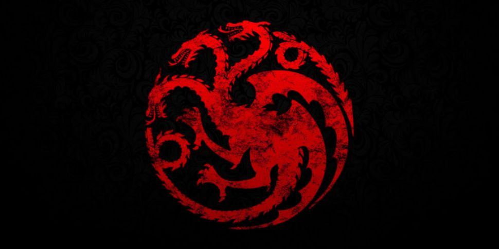
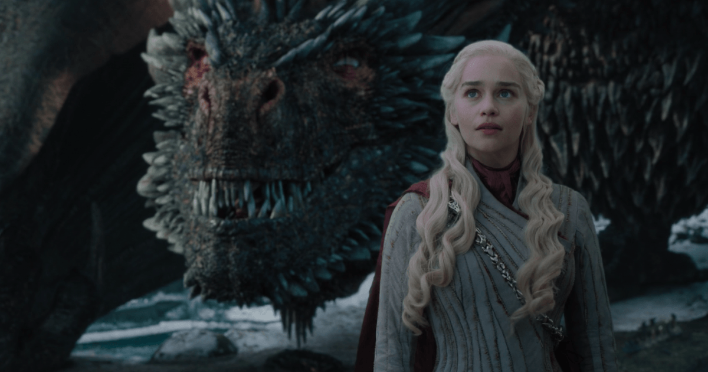
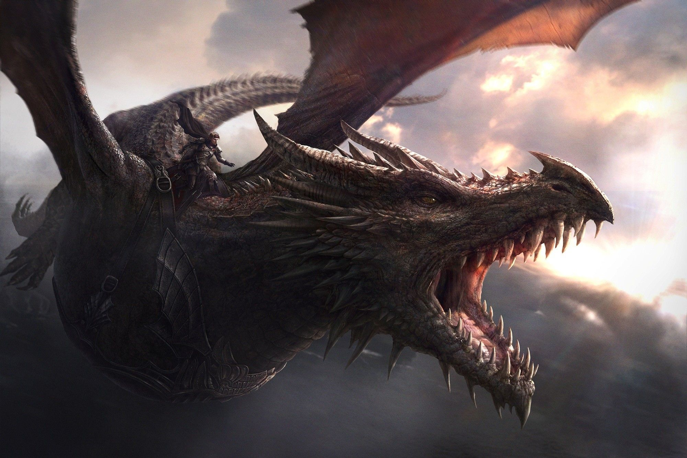

CASA TARGARYEN
Lema"Fogo e Sangue"
Simbolo: Um dragão Vermelho com 3 cabeças
Dentro da série de livros As Crônicas de Gelo e Fogo, bem como o seriado Game of Thrones, uma das famílias mais importantes é a Targaryen,
que já se envolveu em diversos acontecimentos marcantes ao longo da história desse universo fantasioso e cheio de intrigas políticas.
Os integrantes dessa família já tiveram participações de grande destaque e roubaram a cena em diversos momentos, além
de terem algumas características físicas e costumes próprios que se tornaram uma marca registrada entre seus membros.
HISTÓRIA

A Casa Targaryen é uma família nobre, descendentes da velha Valíria, que, por quase trezentos anos, governou os Sete Reinos de Westeros.
Eles eram uma das famílias conhecidas como Senhores de dragões que regiam o Império Valiriano. Alguns anos antes da Perdição de Valíria,
os Targaryens abandonaram seu lar em Essos e se assentaram em Pedra do Dragão, uma antiga fortaleza valiriana na costa de Westeros.
Lá eles residiram por mais de um século, até que Aegon, o Conquistador e suas irmãs-esposas, Visenya e Rhaenys, iniciaram a Guerra da Conquista.
Os Targaryen governavam com os títulos de Rei dos Ândalos, dos Roinares e dos Primeiros Homens e Senhor dos Sete Reinos, além de serem lordes
das Terras da Coroa, por quase 300 anos. Dezessete reis Targaryen se sentaram no Trono de Ferro. Eventualmente, com o passar do tempo, conflitos internos,
desafios de outras casas e a morte dos seus dragões enfraqueceriam seu poder. O último da dinastia foi Aerys II, o Rei Louco, que foi assassinado por um membro de sua Guarda Real,
Sor Jaime Lannister durante a Guerra do Usurpador, encerrando o reinado Targaryen sobre Westeros, sendo substituído por Robert da Casa Baratheon.
CARACTERÍSTICAS E COSTUMES

Assim como as demais famílias que nasceram na região que fica em Essos, os Targaryen possuem as seguintes
características físicas: pele clara, cabelos loiros ou platinados e olhos que podem ter tons de roxo ou azul claro.
Curiosamente, os Targaryen conseguem tolerar mais o calor do que as outras pessoas, mas não chegam a ser imunes ao fogo.
Seus integrantes também possuem o costume de terem sonhos premonitórios, algo que já acontecia quando ainda eram residentes de Valíria.
Outro costume muito comum na família é que eles não costumam se relacionar com outras casas e seus descendentes são frutos de relações incestuosas
(algo comum entre os valirianos). Por conta disso, seus integrantes costumam ter surtos de loucura, algo que os próprios Targaryen já admitiram ter.
Os Targaryen também tinha o costume de seguir os deuses da Valíria, mas abandonaram o costume quando chegaram a
Westeros e se converteram à Fé dos Sete, a religião predominante no continente. Seus entes falecidos costumam ser tradicionalmente cremados.
DRAGÕES

Os Targaryen criaram dragões durante uma grande parte de seu reinado em Westeros. Cada dragão foi nomeado e vinculado a um
Targaryen específico, que o montava em tempos de guerra ou o usava como meio de transporte. Para alojar seus dragões, a familia
construiu uma imensa estrutura em forma de cúpula chamada de Fosso do Dragão. porém seus números estavam diminuindo
devido a mortes em batalhas e por ficarem mais fracos a cada geração. O último dragão Targaryen era deformado e morreu muito jovem.
Mesmo assim, a família manteve o costume de sempre dar um ovo de dragão para cada novo membro da família (vale lembrar que os
ovos de dragão podem permanecer intactos por décadas e até mesmo séculos). Depois de 150 anos, eles ressurgiram graças a Daenerys Targaryen,
que se tornou “mãe” de Drogon, Rhaegal e Viserion.
Principais Dragões:
-
Balerion - Também conhecido como terror negro, Dragão montado por Rei Aegon I durante a conquista de Westeros.
ao lado de sua irmã-esposa Rainha Visenya, e sua irmã-esposa Rainha Rhaenys.
-
Vhagar - Dragoa montada pela Rainha Visenya, durante a conquista de Westeros.
-
Meraxes - Dragoa montada pela Rainha Rhaenys, também durante a conquista de Westeros.
-
Caraxes - Dragão montado pelo Príncipe Daemon Targaryen durante a Dança dos dragões.
-
Drogon, Rhaegal e Viserion - Dragões montados por Daenerys Targaryen durante a Guerra dos tronos.
PRINCIPAIS MEMBROS

-
Aenar Targaryen - Considerado o integrante mais antigo da família.
-
Aegon I Targaryen - o grande responsável por fazer a Casa Targaryen se tornar a grande governante de Westeros
por três séculos. Foi ele o responsável por iniciar as conquistas dos Sete Reinos e se tornou seu primeiro lorde e também o primeiro
a se sentar no Trono de Ferro.
-
Aerys II Targaryen - O 17º e último membro da família que se sentou no Trono de Ferro. O início do seu reinado,
que durou 21 anos, começou com paz e prosperidade. No entanto, uma série de acontecimentos lhe deixaram paranoico e cruel,
o que fez ganhar o famoso apelido de “Rei Louco”. Acabou morto por Jaime Lannister durante a Rebelião de Robert.
-
Rhaegar Targaryen - ele seria o próximo herdeiro do trono, mas também acabou morto durante a Rebelião de Robert.
Por conta disso, ele era o Príncipe da Pedra do Dragão. Ele se apaixonou por Lyanna Stark e na série televisiva, tiveram um filho, que era
ninguém mais, ninguém menos que Jon Snow.
-
Daenerys Targaryen - a integrante mais famosa da família, que teve grande destaque tanto nos livros quanto na série.
Ela é a filha mais nova de Aerys II. No seriado, ela acabou morta por Jon Snow para evitar um novo governo tirano em Westeros.
CITAÇÕES
"Tal como seus dragões, os Targaryen não respondiam nem perante os deuses, nem perante os homens."
"Quando um Targaryen nasce os deuses jogam uma moeda para o alto e, dependendo do lado que cair,
o Targaryen será louco ou um grande conquistador.